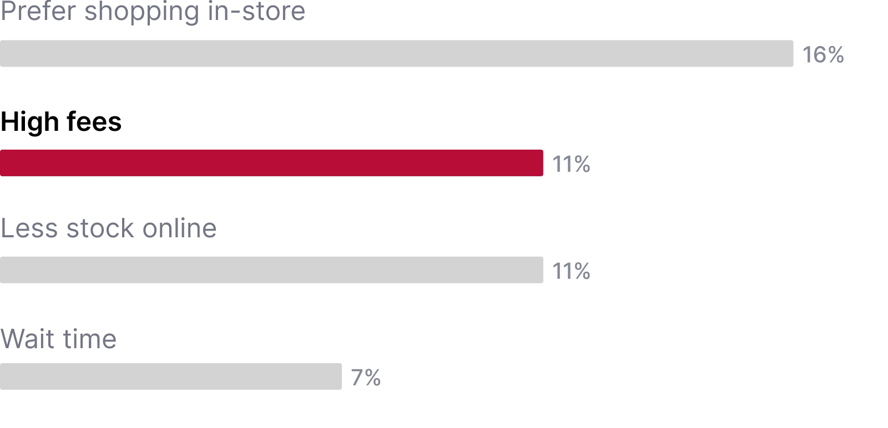

Launching a subscription service for Canada's largest grocery chain
PC Express Pass launched for Loblaws' e-commerce platform and drove 21% conversion and a 10% increase in retention year-over-year.
Timeline: Oct 2022 - Mar 2023
Role: Product Designer
Team: Myself, Allan D. (Design Lead)

Marketing image for PC Express Pass, designed by our amazing marketing design team.
TL;DR
PC Express is a grocery e-commerce service for Canada’s largest grocery chain — Loblaws. Though the service has hundreds of thousands of loyal customers and accrued billions in revenue, we’ve been noticing churn amongst customers throughout 2022. After surveying these customers, we learned that 32% said their reason for leaving was due to high fees.
To combat this problem, we launched PC Express Pass: a subscription service for customers to receive $0 fees on grocery pickup and delivery orders. My contributions on this project were the design of the end-to-end flows across both web and app.
PC Express Pass went live in March 2023, and since then, we've accumulated over 109,000 subscribers at an over 21% conversion rate! It's clear customers really wanted to get rid of fees, and we've been able to save them over $9M in fees thus far. The stat I'm most proud of is retention and recurring purchases, as we've been able to increase retention year-over-year by over 10%.
PC Express Pass was one of Loblaw Digital's biggest initiatives of 2023 and one of their most successful launches of all time. I was responsible for the end-to-end design of the experience across both web and app.
What is PC Express?
Put simply, PC Express is grocery e-commerce for Canada's largest grocery chain — Loblaws. Due to it's huge reach, the service has accumulated hundreds of thousands of repeat customers and billions in sales. Why would customers choose shopping on PC Express over a competitor? Aside from in-store pricing and ~70% serviceability coverage of all Canadian households, PC Express offers earning and redemption of PC Optimum points — Canada's most valuable loyalty program.
As of today, PC Express offers pickup and delivery for groceries, and primarily has an 80/20 pickup-to-delivery ratio for orders.
The problem
Customers are churning due to fees
You might be thinking: if it's so successful and the loyalty program is so good, why are customers churning? The answer is high fees. When surveying existing customers, we heard that 11% mention high fees as being one of the primary areas of improvement. In contrast, when surveying customers that have recently churned from shopping with PC Express, 32% attributed their reason for leaving PC Express as high fees.
Existing customers
Areas of Improvement
Past customers
Reasons for Churn
Delivery customers are hit the hardest
Pickup fees have been relatively stable, however delivery fees have been increasing to account for rising operational costs. For orders being delivered within the same day, delivery fees are $9.99, and go up to $13.99 for orders within 3 hours. For example, on a $50 grocery order, $14 in fees would account for almost 22% of the final total... This was important for us to consider because 35% of our delivery customers place orders within the same day or earlier.

Delivery customers would need to pay $13.99 in fees for orders within 3 hours, and $9.99 for all other orders within the same day.
Areas of opportunity
How might we reduce delivery fees for our most loyal customers, yet still continue to earn revenue for PC Express?
Working with our stakeholders and the business, numerous ideas came up around dynamic pricing for fees, as a percentage of the order value. What this meant was, if customers had smaller orders, they would pay lesser fees (and the converse). The issue with this idea was that it didn't solve for the core problem of high fees and also disincentivized customers from having large orders, directly competing with a core PC Express business objective of attaining higher AOVs.
What we proceeded with was a subscription program to remove fees. This would double-down on us servicing our most loyal customers, as well as outline an additional revenue stream that would supplement revenue lost from fees.
Researching previous PC Express subscriptions
One of the unseen catalysts for a need for a subscription program was that PC Optimum Insiders (PCOI) was being shut down. The PCOI program has been around for years and serviced all Loblaws-owned businesses through benefits such as 10% back in points on house-brand products and free pickup (only) on PC Express. The key thing it was missing was free delivery.
Many of our most loyal customers were PCOI members, and knowing how many of our customer base prefers pickup over delivery, we knew that a future challenge would be to convince these customers to switch to the newer subscription service. (More details on challenges faced with this later).

PCOI subscribers get benefits across all Loblaws-owned businesses, not just PC Express.
How competitors handled subscription programs
Let’s face it, there were a lot of delivery services before us doing subscriptions. Even we had a subscription before our subscription…
So we looked at examples such as Uber One, DashPass, and Instacart+ and saw they handled their subscriptions very differently, yet there was a common theme across the three. They didn’t shy away from showing off their ads throughout the experience. Some play to the customer’s fear of regret or FOMO, with taglines like “you could save $X with {insert membership here}”. Their sign up experiences were usually a one-click and done, aimed to get you into the program as easily as possible. And lastly all three had a robust management process, with Uber One actually having their cancellation process a bit more hidden. Instacart+ and Uber One also called out the membership savings to try and stop you from even getting to the cancellation screen.

Defining our north star for success
Design goals
My design lead and I took these learnings into a design sprint and narrowed the customer journey to 3 core aspects: discovery, the core sign up experience, and managing the subscription (post sign-up). For each part of the stage, we had a tenet that we followed to hold us accountable and ensure we were solving the right problems.
Discoverability
Customers needed to know about this program early and often. In addition, we have to make the sign up process easily accessible.
Easy sign up
If customers are near the end of the funnel and about to purchase groceries, we should have a frictionless experience that reduces deviation from that flow.
Simple management
Once you’ve subscribed, managing details of your subscription shouldn’t be difficult. Have you ever tried cancelling LinkedIn Premium?
Key metrics: a high conversion and increased retention
The ultimate success metric of this program would be a high conversion rate. However, as we knew we had to launch with a free-trial to be competitive, I knew this would skew our results in favour of the metric. What I defined during the sprint was: the number of people that are subscribed, after free-trials have run out. Though this measured success of the program on its own, a true measure of success would be increased retention, since our core problem was churn.
Designing for discoverability
(I designed both web and app for launch, but I'll focus on the app experience for this case study).
Focusing on the first tenet, Discoverability, we knew one way to get customers’ attention was through ads. I called out that the most important parts of the experience to include these ads were at timeslot selection and checkout, as this is where customers are most aware of the fees they’re paying. At the same time, the end of the funnel shouldn’t be the first time they hear of this program.

Designing a fast sign up flow
Focusing on the leanest possible flow
For the second tenet, I wanted to minimize the steps it took to sign up, so customers could get back to shopping for groceries. I designed the flow to be launched on-click of the ads throughout the experience, and have the annual subscription pre-selected once that screen opens.
Since this subscription would likely appeal most to existing, repeat customers, their credit card information would be saved. Thus the resulting flow is simply tapping the ad and pressing sign up to continue.

An approach focused on converting fast, but it lacked details about the program and the ability to switch plans.
Core details were missing, so I iterated
With the first flow, I really focused on reducing decisions a customer would need to make and focused on pushing customers to convert (through a free trial). Through feedback from stakeholders however, they brought up that we should show the plan types, as only the annual plan would offer the free trial. I added them, but took that to another level and felt that I could also use the space to better explain the benefits of the program, so I listed out the value propositions. I made edits and started to iterate on more final designs for the sign up journey.

Designing for simple management
Lastly, for having a simple manage process, this primarily meant to make cancellation as easy as possible. Since we expected all the information to be stored within the customer’s PC Express profile (using their saved credit card), I designed the only functions within the subscription page to be the option to switch plans and the cancellation button.

Testing with customers
The yellow branding we used wasn't working
Though the flow was simple enough, we still put it through usability testing to gather customer feedback on the value propositions, the program, and if they knew how to sign up and cancel a subscription. The most interesting part of the studies was that customers did not notice the branding throughout the experience at all. Even when asked about the "yellow ads", customers did not recall seeing them.

We proceeded with a deep red to capture more attention
We amounted this to banner blindness, but also found that the yellow wasn’t a high enough contrast to capture customers’ attention. We ended up choosing the deeper red because it felt closer to the PC Express red branding, and conversely had a higher contrast compared to the yellow.

Technical constraints: using a third-party vendor
The sign up flow required customers to re-enter credit card information
Our dev teams explored ways to charge recurring payments to customers' credit cards and realized we couldn't, and thus our sign up flow came into question. Our current payment systems didn’t have the capability, so we had to use the same third-party vendor that was used with PCOI. Why didn’t we know this going in? Well the people that built PCOI weren’t involved in this engagement; something we learned way too late. This meant that customers would have to enter their credit card information for the program to be stored in the third-party’s backend system, even if they frequently shop with PC Express and had a credit card saved.
Design proposals to simplify the flow weren't feasible
I think the worst part of the experience is the addition of the shipping address fields, which don't make sense in the context of a fee-focused subscription program (the third-party needed it for tax purposes). I designed and proposed a solution where we could use the customer's saved addresses on file, to fast track them through the process. Unfortunately, we couldn't proceed with this solution because the third-party has no way of knowing what addresses are saved to a customer's account.
My proposal for simplifying the shipping address step, which was ultimately rejected.
Customers had to enter a shipping address and credit card
I was upset with this approach, so I launched a quick unmoderated test with customers to gather feedback focused on the sign up process. What I found was that none of the participants actually mentioned this as being a negative part of the experience when signing up — even after being asked about the form fields. After reporting this to our stakeholders, the business team concluded that customers would likely still be motivated enough to remove fees from the experience, even if it means to spend ~30 seconds to enter in their credit card details again.

The resulting flow for signing up for a PC Express Pass subscription.
The management page expanded to include shipping and billing addresses and another credit card
This then impacted our manage screens, as we needed a place to store customers' information that they sent to the third-party. Unfortunately, as a result we had to cut scope from the page, removing the savings messages and the ability to switch plan types after sign up. (Since writing this case study, the ability to switch plans has been added back).

We had to cut scope to make room for other functionality on the manage screen.
Technical (and legal) constraints: PCOI
PCOI customers had to give up their subscription for PC Express Pass
Since we were using the same third-party that the PCOI program was using, our developers told us that signing up for PC Express Pass with an account with a PCOI subscription would forfeit it in favour of PC Express Pass, and that a customer couldn't have both. That was mindblowing! After reviewing this with our legal team, we all felt it was necessary to include additional steps to let customers know they were giving up their subscriptions. The primary piece of feedback was that we needed a checklist format, and clear copy to communicate that they're giving up the PCOI subscription.

PCOI customers would see this flow upon sign up.
The scope continued to expand
The sign up flow expanded a lot from a one-click sign up, to a large flow encompassing many different types of customers. Though the final flow looks hectic, we soon learned that this worked just fine for a lot of our customers.

Resulting designs
If you've read the TL;DR, you might already know this.
PC Express Pass went live in March 2023, and since then, we've accumulated over 109,000 subscribers at an over 21% conversion rate. In total, we've been able to save customers over $9M in fees. For our most important metric, being retention, we've observed a 10% increase in retention year-over-year! And as expected, our best performing ad placement was in the latter half of the funnel, specifically in cart.


A ton of coordination
As I mentioned, it all kicked off with a design sprint. Representatives from marketing, UX, business, and development were all involved in the kick-off for the project, and I was the primary product designer on the initiative until it’s launch, with assistance from my lead, Allan. Though this seemed like a lot, this project then blew up to include heavy involvement from legal, PC Financial, our third-party vendor, and more effort from marketing than we initially imagined.
Now, how was this a challenge? Well, how was it not? Finding calendar times, gaining alignment from so many people on the smallest things, coordinating communications between legal teams, marketing and UX teams, and much, much more.
In retrospect, I don’t think there really is a way to solve for situations like this. Though Loblaw Digital operates like a startup, it still is under the Loblaw parent company which operates like not-a-startup… Large launches will require large engagements.
Learnings and takeaways
I had to do a lot and wear a lot of hats on this project. This might be the least UX-artifact-heavy project I’ve worked on, but somehow it felt like the most? I worked a ton with our marketing teams because content was so important on a project like this. We always had to make sure what they were sharing in ads and media matched what we were sharing in the experience to our customers.
Closely partnering with development was a must as well. We always had impromptu calls and deep walkthroughs of flows and rules for things in the experience. Throwing in the third-party layer as well, it brought us to empathize with each other as it was a service we were all new to and had to learn.
That stuff being said, I think my biggest learning was just working with a lot of different teams and getting to know a lot of people. I made great friends on our marketing side after being down and dirty in this project and I’m very thankful for it.
Last updated [02/14/24]